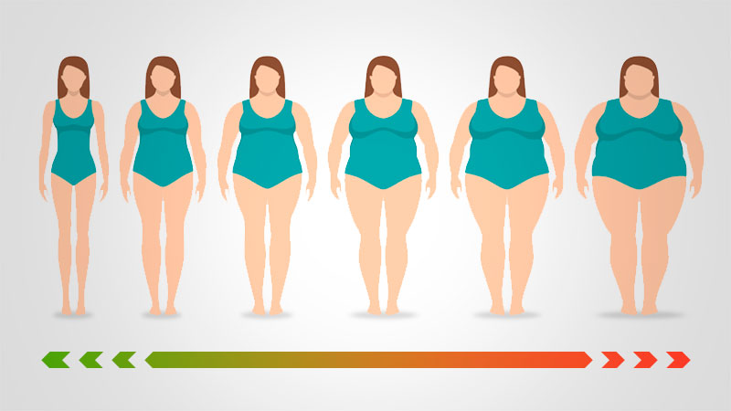

Informative Blog on Body Mass Index

Underweight BMI: Tips and Guidelines to follow for being upderweight
An individual is considered underweight if their Body Mass Index (BMI), calculated by dividing weight in kilograms by the square of height in meters, is less than 18.5.
Read More

Overweight Management Tips
Treatments for overweight and obesity include lifestyle changes, programs that include support from weight-loss specialists, medicines and devices.
Read More
Overview On Weight Management
Changing your lifestyle in a way that works for you so you can stay at a healthy weight.
Read More